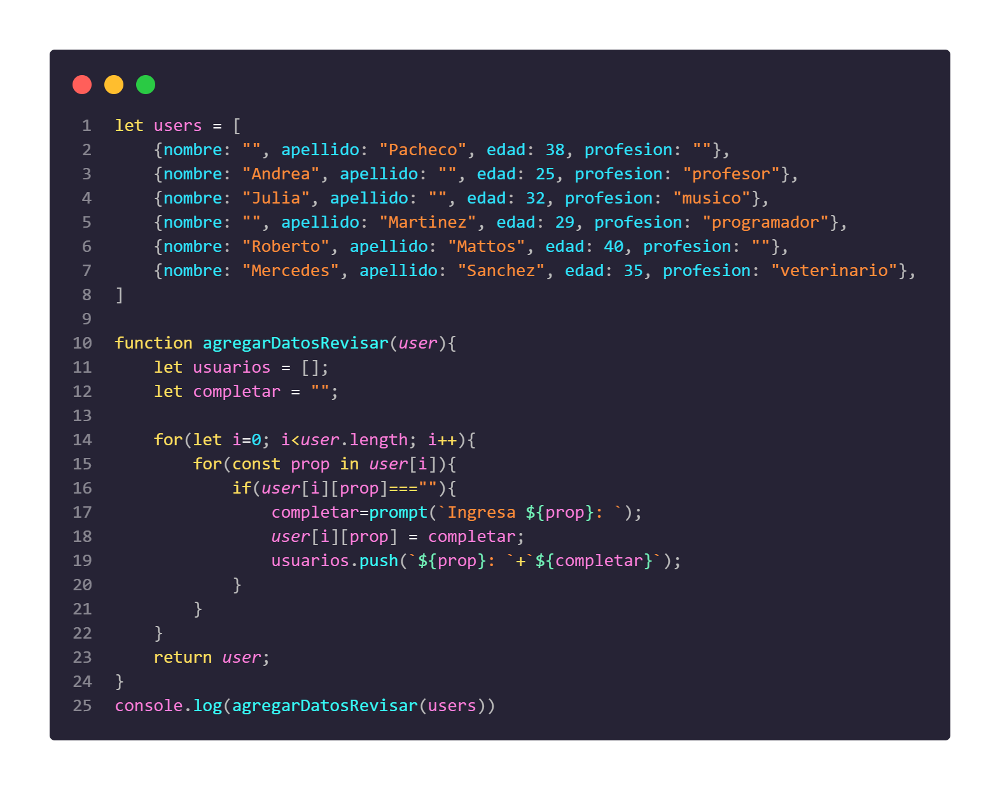

Te enviaron una base de datos de usuarios: Te piden que utilizando las funciones de los ejercicios anteriores, evalúes que usuarios tienen datos pendientes y en caso no existan, solicitar el ingreso de los datos a través del prompt para completarlos.
 * Tras rellenar los prompt, verifique la consola para validar la función